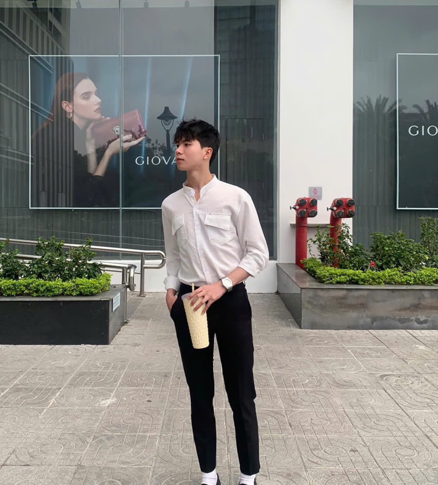
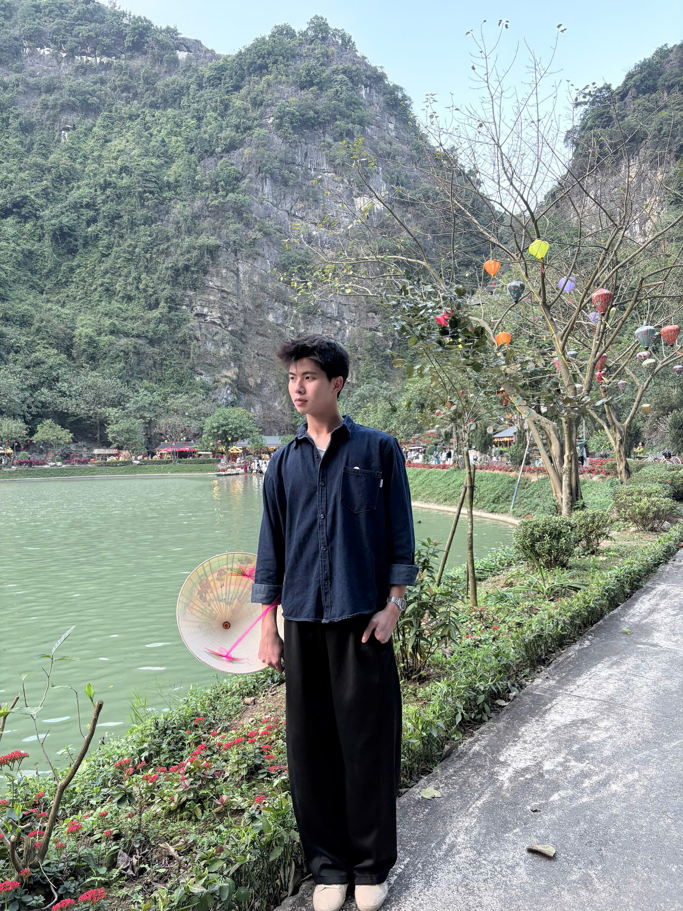

Ngành học: Kỹ thuật Robot — Khoa Điện tử Viễn thông, Trường Đại học Công nghệ (UET) - Đại học Quốc gia Hà Nội
🛠️ Sở thích & Điểm mạnh cá nhân:
🚀 Định hướng phát triển cá nhân:
Mình hướng tới mục tiêu trở thành một kỹ sư Kỹ thuật Robot toàn diện trong kỷ nguyên số. Để chuẩn bị cho hành trình đó, mình tập trung xây dựng nền tảng vững chắc về phần cứng cơ điện tử kết hợp tư duy lập trình điều khiển thông minh. Trong tương lai, mình muốn ứng dụng sâu các công nghệ mới như AI và IoT vào việc phát triển hệ thống robot tự hành, nhằm mang lại những giải pháp tự động hóa tối ưu, phục vụ thiết thực cho công nghiệp và đời sống.
🎯 Mục tiêu của Portfolio này:
"Portfolio được xây dựng nhằm hệ thống hóa và lưu trữ trực quan các sản phẩm thực hành, qua đó chứng minh những kỹ năng số cốt lõi mình đã tích lũy trong môn học. Đây không chỉ là không gian chuyên nghiệp giúp chia sẻ kết quả học tập tới thầy cô, bạn bè mà còn là cơ hội để mình tự đánh giá năng lực công nghệ của bản thân. Những trải nghiệm thực tế từ dự án này sẽ là bệ phóng vững chắc giúp mình tự tin chinh phục các môn học chuyên ngành tiếp theo tại UET."


Mục tiêu: Làm chủ kiến trúc máy tính và cơ chế giao tiếp phần cứng.
Tóm tắt quá trình: Nghiên cứu sơ đồ khối của máy tính, liên hệ sâu sắc cách CPU xử lý dữ liệu đầu vào và điều khiển các thiết bị ngoại vi (liên hệ trực tiếp cảm biến và động cơ trong hệ thống Robot).
Mục tiêu: Xây dựng bộ kỹ năng tìm kiếm nâng cao và quản lý dữ liệu số.
Tóm tắt quá trình: Thực hành sử dụng các cú pháp tìm kiếm nâng cao để khai thác tài liệu khoa học, tìm kiếm chính xác các thông số kỹ thuật (datasheet) của linh kiện điện tử trên môi trường Internet.
Mục tiêu: Ứng dụng AI tạo sinh phục vụ học tập và nghiên cứu công nghệ.
Tóm tắt quá trình: Sử dụng các công cụ AI lớn (ChatGPT, Gemini) để tối ưu hóa quy trình gỡ lỗi code (debug), tìm ý tưởng giải thuật toán điều khiển và phân tích các xu hướng ứng dụng AI vào thị giác máy tính cho Robot.
Mục tiêu: Phát triển kỹ năng làm việc nhóm từ xa dựa trên các nền tảng đám mây.
Tóm tắt quá trình: Phối hợp cùng các thành viên trong nhóm thiết lập không gian làm việc trực tuyến thông qua Google Workspace, phân chia task tiến độ rõ ràng để hoàn thành bài tập chung đạt hiệu quả tối ưu.
Mục tiêu: Truyền tải kiến thức kỹ thuật thông qua các ấn phẩm truyền thông số.
Tóm tắt quá trình: Lên ý tưởng và sử dụng công cụ Canva để thiết kế infographic mô tả cấu trúc một hệ thống điều khiển tự động, đồng thời biên tập video ngắn giới thiệu mô phỏng hoạt động cơ học.
Mục tiêu: Tuân thủ đạo đức công nghệ và bảo vệ an toàn thông tin cá nhân.
Tóm tắt quá trình: Nghiên cứu các quy định về luật sở hữu trí tuệ, thực hành trích dẫn nguồn tài liệu chuẩn IEEE trong các báo cáo kỹ thuật và áp dụng các phương thức bảo mật tài khoản cá nhân trên không gian số.
Lộ trình 06 Bài học
Một hành trình bứt phá từ quản trị tệp tin cơ bản đến tư duy công nghệ thông minh.
Nhìn lại toàn bộ chặng đường đã qua, chuỗi 6 bài học không chỉ đơn thuần là việc tiếp thu lý thuyết, mà thực sự là một hành trình chuyển đổi tư duy số đầy mạnh mẽ. Khởi đầu từ việc chuẩn hóa hệ thống dữ liệu nhỏ nhất cho đến khi biết cách phối hợp nhịp nhàng cùng trí tuệ nhân tạo, mình đã tự tin làm chủ không gian số của bản thân.
Chặng 1: Nền tảng & Tối ưu
Tại Bài học số 1, mình đã thiết lập được thói quen tổ chức và lưu trữ dữ liệu theo mô hình phân cấp hệ thống, giúp việc tìm kiếm tài liệu diễn ra tức thì. Bước sang Bài học số 2, các thuật toán tìm kiếm nâng cao của Google đã biến thành công cụ đắc lực, giúp mình chủ động sàng lọc thông tin rác và tiếp cận trực diện nguồn tài liệu học thuật chính thống.
Chặng 2: Cộng tác & Trí tuệ
Tối ưu cấu trúc câu lệnh - Kết nối không giới hạn
Bài học số 3 mang lại bước ngoặt lớn khi mình nắm vững nghệ thuật viết Prompt Engineering để biến AI thành người trợ lý thông minh. Ngay sau đó, tại Bài học số 4, việc áp dụng hệ sinh thái đám mây Cloud linh hoạt đã giúp nhóm của mình phối hợp làm việc trơn tru, xóa bỏ hoàn toàn các rào cản về khoảng cách địa lý và thời gian.
Chặng 3: Sáng tạo & Chuẩn mực
Trong Bài học số 5, quá trình thiết kế ấn phẩm số giúp mình thấu hiểu sâu sắc nguyên tắc "Con người làm trung tâm" – dùng công cụ công nghệ để gia tăng hiệu suất nhưng luôn làm chủ chất lượng sản phẩm cuối cùng. Điểm tựa vững chắc khép lại hành trình là Bài học số 6, nhắc nhở mình thượng tôn tính liêm chính học thuật và trách nhiệm đạo đức trước mọi giải pháp công nghệ tạo ra.
Đánh giá Năng lực Số
Hệ thống biểu đồ tăng trưởng bên cạnh phản ánh trung thực sự bứt phá về năng lực thực hành của bản thân. Từ một người tiếp cận công nghệ theo bản năng, mình đã biết cách phân tích, phản biện đa chiều và liên tục hiệu chỉnh đầu ra để sản phẩm luôn đạt tiêu chuẩn chuyên môn cao nhất.
"Khép lại học phần này hoàn toàn không phải là điểm kết thúc, mà chính là bước khởi đầu vững chắc để mình tự tin tiến sâu vào thế giới công nghệ chuyên ngành. Hành trang lớn nhất mình mang theo không chỉ là kỹ năng số, mà là tư duy học tập trọn đời cùng ý thức đạo đức công nghệ nghiêm túc. Tất cả sẽ tạo nên bệ phóng vững chắc để hướng tới mục tiêu trở thành một kỹ sư Robot toàn diện của UET: Vững vàng về chuyên môn phần cứng, sắc bén trong tư duy phần mềm thông minh và luôn có trách nhiệm cao với cộng đồng."